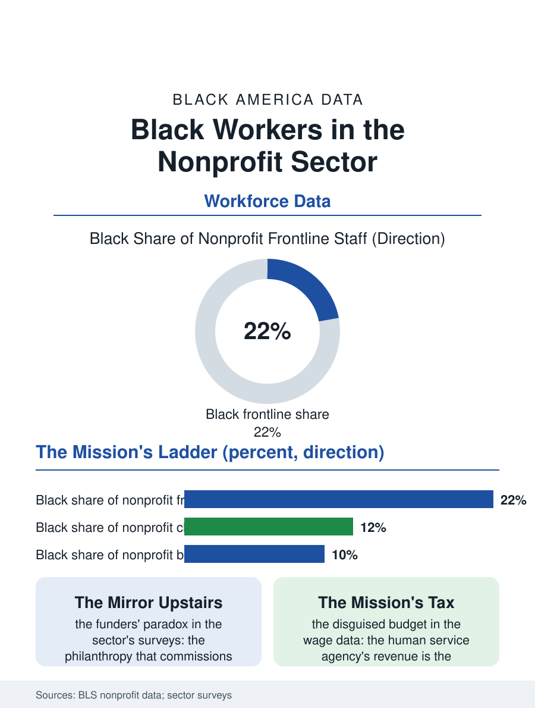

Black Employment
The Mission's Payroll: Black Workers in Nonprofits
The frontline is a fifth Black, the boardroom a tenth, and the wage is a public budget in a mission's clothes. The nonprofit file.

The nonprofit sector employs roughly a tenth of the American workforce, and its Black workers staff the hospitals, universities, social service agencies, and cultural institutions that this atlas's other files depend on, at shares above the private economy's average in the service tiers and at the familiar thinness in the executive and board tiers that govern them. This article reads the nonprofit workforce file.
The Mission's Payroll
The sector's composition explains its workforce: nonprofit employment concentrates in health care and education, the two most Black-employing industries of the institutional files, and in the human services, the agencies whose clients are the community itself, where the Black share of the frontline workforce, the case managers, the program coordinators, the community health workers of the outreach files, runs at the highest levels in the employment data outside the public sector. The wage file is the sector's standing tension: the nonprofit wage discount, the mission's tax on the paycheck that the labor economists measure across the comparable occupations, falls on a workforce drawn disproportionately from the served community, whose acceptance of the discount is subsidized by the mission's meaning in a currency the sector's critics, including its own labor movement's current growth, have begun to price aloud. The funding file beneath the payroll is the grant's and the government contract's, the human service agency's revenue being substantially the state's purchase of the service at the administered rate of the Medicaid file's pattern, so that the nonprofit wage is, like the child care wage, a public budget decision in disguise. The development file, the fundraisers who raise the sector's money, posts its own composition in the profession's surveys, the Black fundraiser's share in the single digits against the donor base's diversification, a gap the sector reads as its future revenue's problem as the donor generations turn. The volunteer file beneath the payroll, the board's cousin and the program's unpaid margin, draws the community's hours in quantities the satellite accounts price in the billions, the Black church's volunteer corps being the sector's largest single uncounted workforce, and the line between the volunteer tradition and the paid file is the professionalization's own frontier, walked daily by the women who have done the work in both forms.
The Board and the Corner Office
The governance file is the sector's mirror of the corporate one: the executive director and chief executive ranks of the large nonprofits post Black shares in the low teens in the sector's own surveys, the board seats thinner, the endowment and hospital systems' commanding heights thinnest, a distribution the sector's diversity initiatives have tracked for decades with the foundations' own money, the funders' paradox being the file's standing irony, the philanthropy that commissions the equity study being governed on the composition the study laments. The Black-led organization's funding file, treated in the arts file's audit, generalizes across the sector: the revenue and asset gaps between the Black-led and white-led nonprofits of the same mission, documented in the sector's research, compose the institutional wealth file of the community's own infrastructure, its agencies owning less, reserving less, and closing at higher rates in the downturns for the balance sheet's reasons rather than the mission's.
The Sector's Reckoning
The nonprofit file closes on the sector's current labor moment, because the unionization wave in the cultural and social service nonprofits, the organizing among the case workers and the museum staffs and the agency professionals, is substantially a Black workforce's movement in the sector's cities, pressing the mission's discount as a labor question in the institutions that taught the language of the question. The sector's promise in the community's ledger remains what it was: the nonprofit is the legal form the community's self-help has taken since the mutual aid societies incorporated, and its workforce is the professionalization of that tradition, the neighbor's care converted to the case load, at the wage the budget allows. The bureau counts the sector's workers in the tens of millions nationally, its Black share in the service tiers among the employment files' highest. The file's last entry is the agency's waiting room at opening, staffed by the women of the neighborhood at the wages of the grant, doing the work the state's own hand does not reach, which is the sector's definition and its indictment in a single shift, and the workforce's file is where both halves are finally written in the same hand.
More in Black Employment
The Black Unemployment Rate: The Two-to-One Pattern
Black unemployment runs at roughly twice the White rate — 5.5 percent against 3.3 percent in annual averages — a ratio stable across five decades of federal data. How it is measured and why it persists.
Black Median Weekly Earnings: The 80-Cent Ratio
Black full-time workers earn a median of about $900 a week — roughly 80 cents for every dollar White workers earn. The BLS earnings data by group, gender, and occupation.
Black Labor Force Participation: Working at National Rates
Black labor force participation runs at roughly the national rate — and Black women participate at higher rates than White women. The BLS participation data.
Source: Bureau of Labor Statistics nonprofit employment research; National Council of Nonprofits and sector leadership surveys.